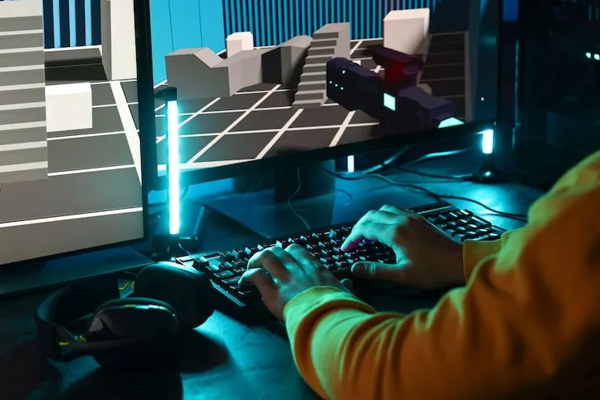

Mi trabajo de sueños sería construir mi propia desarrolladora de videojuegos, en la cual pueda crear un videojuego capaz de formar una comunidad de jugadores. Mi objetivo sería conectar con los jugadores y escucharlos activamente para conocer sus perspectivas, opiniones y sugerencias, con la finalidad de mejorar continuamente su experiencia dentro del juego.
| Paso | Requisito |
|---|---|
| 1 | Terminar la formación como desarrollador de software. |
| 2 | Aprender otros lenguajes y tecnologías orientados al desarrollo de videojuegos. |
| 3 | Desarrollar habilidades y experiencia mediante la creación de pequeños mods para videojuegos. |
| 4 | Formar un equipo de trabajo que comparta la visión del proyecto. |
| 5 | Crear el primer videojuego de la desarrolladora. |
| 6 | Consolidar la desarrolladora como una empresa. |
| 7 | Desarrollar el videojuego principal con el que se busca crear y formar una comunidad de jugadores. |
